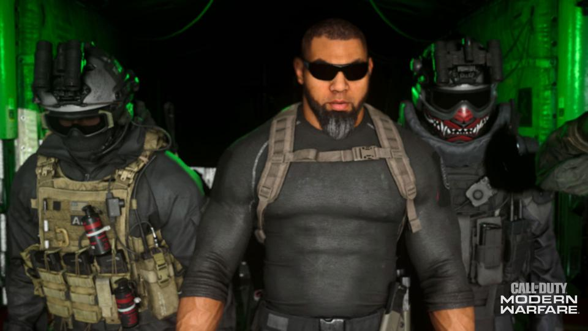
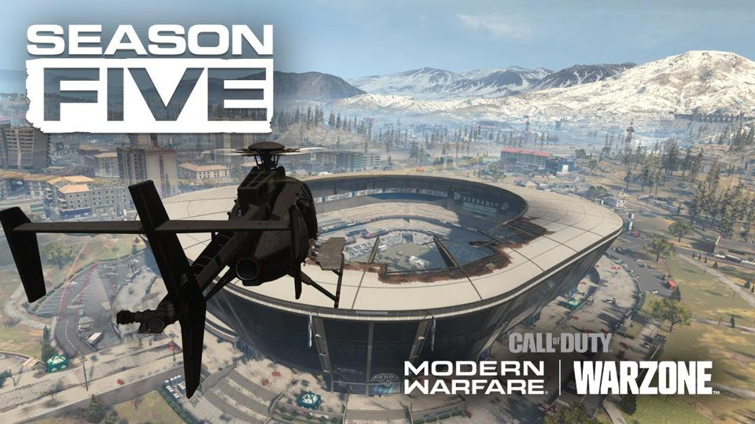

Despite some early reports that season 5 would launch tomorrow, Activision has now confirmed that season 5 will launch on Wednesday August 5, 2020. Probably around 2 PM ET.
This will probably be the new operators for the next season:

Right now the new weapons that we are hearing are likely to be added to season 5 are the:
Not all of these may pan out, but that’s around the number of new weapons we are likely to get.
Perhaps the biggest Warzone-specific thing happening in season 5 appears to be the destruction/opening of the Stadium:

The idea is that after many seasons of the Stadium remaining closed and players only able to land on it or loot around it, that a bomb will blow it open and players will now be able to loot and fight inside the recently destroyed space.
So yes, unlike last season, we are probably getting a major map change here in season 5.